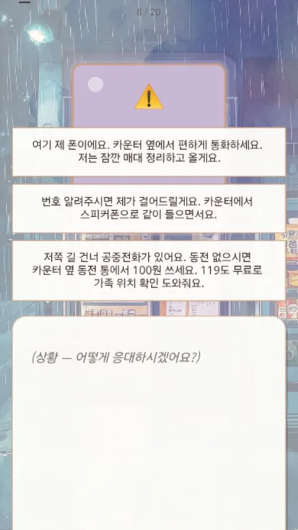
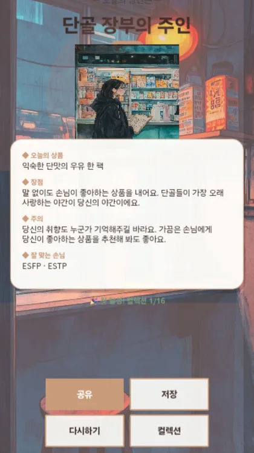

성향 검사의 문항은 대개 추상적입니다. "파티에서 당신은 주로…" 같은 질문에 사람들은 겪은 일이 아니라 상상으로 답합니다. 그래서 중간에 닫습니다.
저희는 문항을 장면으로 바꿉니다.
자정이 넘은 편의점. 취한 손님이 계산대 앞에서 지갑을 찾다가, 갑자기 오늘 회사에서 있었던 일을 이야기하기 시작합니다.
① 계산부터 끝내자고 부드럽게 끊는다 ② 일단 끝까지 들어준다 ③ 따뜻한 음료를 하나 권한다
겪어본 일이라 답이 기억에서 나옵니다. 그리고 다음 손님이 궁금해집니다.
 |
 |
설명을 읽는 것보다 한 번 해보시는 게 빠릅니다. 손님 넷을 맞고 유형을 받는 데 2분입니다. 그리고 마지막에 방금 당신이 만들어낸 데이터가 어떤 형태로 남는지 그대로 보여드립니다.
성향 비주얼노벨 6종과 캐주얼 게임 4종이 Google Play에 공개돼 있습니다. 전부 눌러보실 수 있습니다.
기억의 카페 · 자정의 편의점 · 저물녘의 타로 · 이런저런 골퍼 · 기니피그 다이어리 · 보드게임 페스타
여섯 개는 같은 엔진에서 나왔습니다. 세계관만 다릅니다. 그래서 새로운 세계 하나를 4주에 만들 수 있습니다.
① 끝까지 완주되는 진단 장면이 궁금해서 다음을 넘깁니다. 문항이 아니라 이야기이기 때문입니다.
② "왜"가 함께 남는 데이터 "산미를 좋아한다"만 남는 게 아니라, 야근 중에는 진한 것을 고르고 주말 오후에는 가벼운 것을 골랐다는 사실이 장면 단위로 남습니다. 유형은 세그먼트가 되고, 장면별 선택은 메시지의 근거가 됩니다.
③ 소모되지 않는 자산 한 번 만든 세계는 시즌마다 손님을 추가해 계속 씁니다. 2회차부터는 엔진·세계관·아트를 그대로 쓰므로 값이 다릅니다.
| 파일럿(소규모 시범 프로젝트) | |
|---|---|
| 범위 | 손님 60명 · 8유형 |
| 기간 | 4주 |
| 구조 | 낮은 제작비 + 전환 수수료 |
| 착수 전 합의 | 전환 지표 · 성공 기준 |
| 이후 | 수치가 답을 주면 확장 |
숫자를 보고 결정하시면 됩니다.
콘텐츠 초안은 생성형 AI로 만들고, 사람이 전량 읽습니다. 샘플링이 아닙니다. 소스 코드는 제3 기관에 맡겨두어, 저희가 없어도 운영이 이어집니다.
두 가지 모두 상세 제안서에 계약 조항까지 적어두었습니다.
상세 제안서와 미팅 자료는 요청하시면 보내드립니다.
MSOON 〔담당자 · 연락처 — 확정 후 기입〕